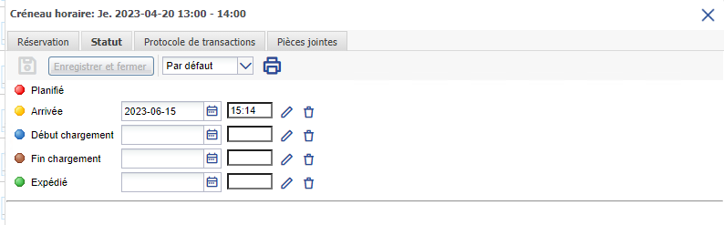
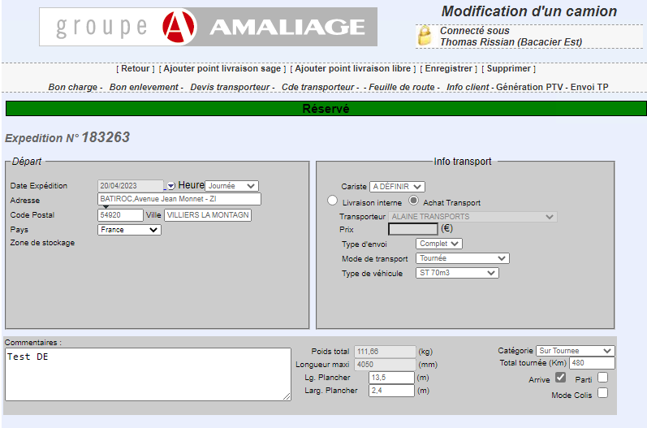
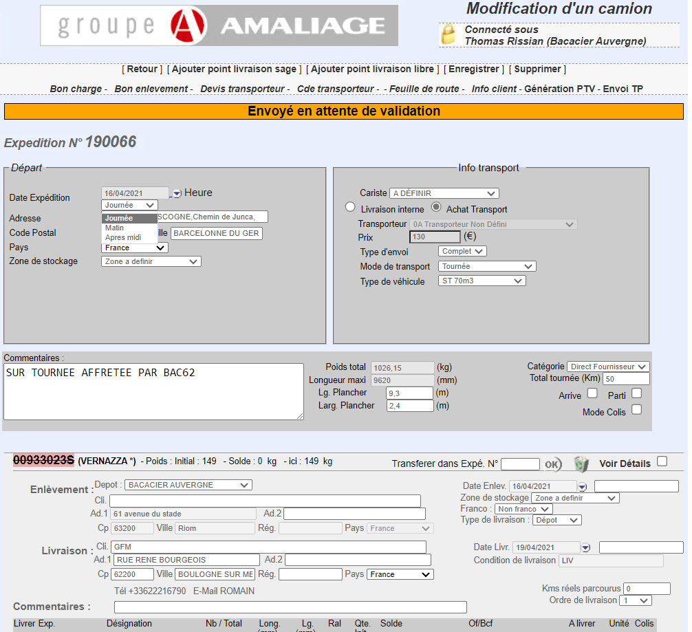
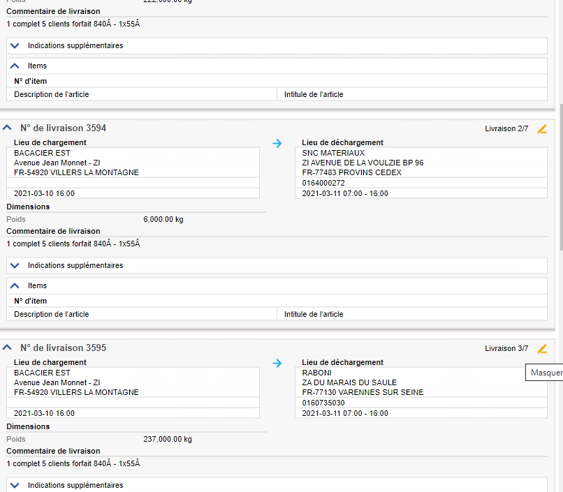

Mission 1er stage : Modification Amaliage
Contexte :
J'ai travaillé seul sur cette mission de stage.
J'ai dû développer une fonctionnalité sur leur intranet, la partie de cet intranet s'appelle Amaliage. Amaliage s'occupe de la gestion des camions.
Environnement technologique :
- visual studio code
- microsoft sql server
- bureau à distance (environnement de développement)
- PHP
- mysql
- HTML / CSS
compétence mobilisée :
- B1.2.3 : Traiter des demandes concernant les applications
l'objectif était que quand on cliquait sur "arrivé" ou "parti" dans transporeon, la case sur Amaliage soit tout aussi coché.
Pour pouvoir faire cela j'ai dû tenter de récupérer la donnée par la base de donnée et faire des tests afin de modifier la valeur correctement.


J'ai rajouté une catégorie qui permettait de gérer les heures de chargement de chaque site. Sur la base de donnée se trouver les horaires pour chaque site, mais ils n'étaient pas implémentés.
je devais dire quand la livraison devait arriver "matin, après midi, journée", et les bons horaires de chaque site devait automatiquement être retourné

